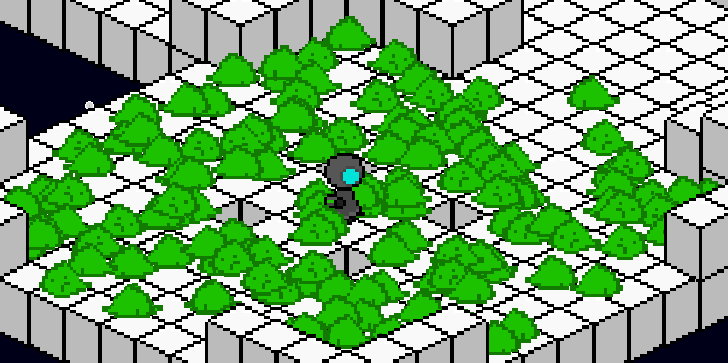

Cleanup on Aisle 6.67

Gameplay Programmer
Custom Entity Component Engine
2020
Cleanup on Aisle 6.67 is an isometric puzzle game starring a cute little vacuum robot tasked with cleaning up various space stations. The player sucks and shoots little creatures to open doors and solves tasks to make outer space a slightly brighter place.
The amazing camera rotation system was created by having spritesheets for each object that show all degrees of rotation. The object’s sprite component was initialized with a rotation value that represented what rotation the object was at in the default camera angle. The sprite component paid attention to a stored camera rotation and offset the sprite index of the object for each allowed degree of rotation.
For this project, I created a particle system to create and update lightweight particles that moved across our screen. This system was leveraged to make the glistening stars that litter our level's backgrounds, as well as the terrain of the level itself. Our levels consisted of a number of cube rooms. These cubes all pulled from the same sprite sheet, but used a different index based on design or rotation. A game object located in the center of the cube created a single particle per block based on data read in from an external text file. This created a cost effective way for massive levels to be generated and updated.
This project featured a semi-custom engine. The Game Object creation, deserialization, required components, and audio pipeline were all custom made, and a school provided library was used for the graphics. We adopted a component-centered engine approach to update and draw all objects in each scene. The engine would loop through every game object and update each of its components in a set order. Our game levels were read in from very simple text files to allow for rapid prototyping of puzzles.